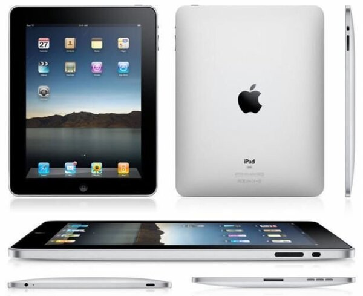

5 жовтня 2011 року зупинилося серце американського бізнес-магната і винахідника, засновника корпорації Apple Стіва Джобса.
"Стів стоїть у ряду найбільших американських новаторів - досить сміливий, щоб мислити не так, як усі, достатньо рішучий, щоб вірити в свої здібності змінити світ, і достатньо обдарований, щоб це зробити", - так відреагував на смерть Джобса президент США Барак Обама.
Джобс набув репутацію вимогливого перфекціоніста, одержимого деталями, який міг зробити нішевий продукт популярним серед публіки, яка не розбирається в комп'ютерах. Джобс став культовою фігурою. Він представив світу кольоровий комп'ютер iMac, потім iPod і iPhone.
Він пішов з життя буквально через день, після того як Apple, показав останню модель смартфона iPhone 4S.
На початку 2003-го року у Джобса виявили рак підшлункової залози. У квітні 2009-го йому зробили операцію з пересадки печінки, і лікарі назвали перспективи пацієнта чудовими.
Однак у січні 2011-го керівництво компанії Apple оголосило, що Джобс йде на невизначений час за станом здоров'я. Повернувшись до керівництва компанією, Джобс в серпні подав у відставку з поста генерального директора корпорації, перейшовши на посаду голови ради директорів.
Ось так виглядає сторінка Apple в день смерті Стіва Джобса
Як сказав сам Джобс у своїй знаменитій промові в Стенфорді в 2005 році:
"Ніхто не хоче вмирати. Навіть той, хто прагне на небеса, не хоче померти, щоб туди дістатися. У той же час, смерть для всіх нас – кінцева зупинка. Ніхто поки її не уникнув. Так воно і повинно бути, бо смерть – кращий винахід життя. Смерть – причина змін, що очищає старе, щоб торувати шлях новому... Не витрачайте відпущений вам час на те, щоб жити чужим життям... майте сміливість прислухатися до серця й інтуїції. Якимось чином вони знають, ким ви хочете стати. Все інше вторинне".
У пошуках себе
Джобс народився у Сан-Франциско і був всиновлений Полом та Кларою Джобс, що дали йому ім'я Стівен Пол. Він навчався у середній школі Homestead в Купертіно (штат Каліфорнія), а після школи відвідував лекції у компанії Hewlett-Packard. Пізніше, компанія взяла його на роботу і він працював там із нашим співвітчизником Стівом Возняком.
У 1972-ому році він закінчив вищу школу і вступив до Рід-колледжу у Портленді. Утім, уже після першого семестру він вибув, хоча і продовжував відвідувати деякі лекції, наприклад, із каліграфії.
Тоді він ночував на підлозі у кімнатах своїх друзів, жив на гроші, отримані від пляшок "Кока-Коли", а по неділях ходив пішки за 11 миль, аби гарно поїсти у місцевому храмі кришнаїтів. Пізніше Джобс сказав, що якби він не записався на курс каліграфії, "у Мака ніколи б не було декількох гарнітур чи пропорційних шрифтів".
У 1975-ому році разом із другом із Рід-коледжу (і, пізніше, першим співробітником Apple) Даніелем Коттке, у пошуках духовного просвітлення поїхав до Індії, де хотів відвідати вайшнавського гуру Німу Каролі Бабу в його ашрамі у Вріндавані.
Із Індії Джобс повернувся буддистом із поголеною головою і у традиційному індійському одязі. Протягом цього часу Джобс експериментував із психоделіками, назвавши свій досвід з ЛСД "однією із двох чи трьох найважливіших речей, які він робив у своєму житті".
Яблучний період
У 1976 році Стів Джобс, Стів Возняк і Рональд Уейн заснували Apple. До заснування Apple українець Возняк був хакером електроніки. Вони дружили протягом декількох років. Джобс зумів зацікавити Возняка збиранням комп'ютера та його продажем.
Пізніше, коли Apple почала розширюватися, компанія почала шукати досвідчених керівників для управління своїм розширенням.
У 1978 році Apple запросила Майка Скотта із National Semiconductor на посаду СЕО.
У 1983 році Джобс переманив Джона Скаллі із PepsiCo на посаду СЕО, запитавши його, чи він "хоче все життя торгувати солодкою водою, або піти з ним і змінити світ".
Уже наступного року Apple випустила у ефір рекламний ролик "1984".
24 січня 1984-го року на щорічному зібранні акціонерів Apple емоційний Джобс представив аудиторії перший Macintosh.
Він став першим комерційно успішним комп'ютером з графічним інтерфейсом користувача.
І хоча Джобс був впевненим та харизматичним директором Apple, деякі з його співробітників описували його як ексцентричного та темпераментного менеджера. Утім, спад продажів продукту компанії у 1984-ому році викликав погіршення робочих стосунків Джобса із Скаллі, і в кінці травня 1985-ого року після внутрішньої боротьби за владу і чисельних звільнень Скаллі звільнив Джобса із посади голови підрозділу Macintosh.
Pixar
У 1986 році Джобс купив The Graphics Group (пізніше перейменовану в Pixar) у підрозділу комп'ютерної графіки Lucasfilm за 10 мільйонів доларів, 5 з яких були надані компанії в якості засобів для розвитку. Після декількох років збитковості продажів Pixar Image Computer вона уклала контракт з Disney на виробництво кілька комп'ютерних мультфільмів, які Disney мав співфінансувати і поширювати.
Перший мультфільм, зроблений у партнерстві в 1995 році - "Історія іграшок" - приніс студії славу і визнання критиків. Протягом наступних 15 років під керівництвом креативного директора Джона Лассетера компанія виробила касові хіти "Корпорація монстрів" (2001), "Тачки"(2006), "ВАЛЛ-І" (2008), "Вгору" (2009) та "Історія іграшок: Велика втеча" (2010) та ін.
"У пошуках Немо", "Суперсімейка", "Рататуй2, "ВАЛЛ-І", "Вгору" і "Історія іграшок: Велика втеча" отримали по "Оскару" як кращі анімаційні повнометражні фільми.
Винаходи Стіва Джобса
Apple Macintosh. Перший популярний персональний комп'ютер, у якому використано графічний інтерфейс.
Apple 1, 1976 рік
Було продано аж 50 штук по 666 доларів США за кожну. Попередник надзвичайно
популярного Apple II
іPod. Це торговельна марка портативних медіаплеєрів компанії Apple Inc., яку було випущено у продаж 23 жовтня 2001 року. Станом на 2008 рік у серії випускається чотири різновиди програвачів: iPod Shuffle без екрану, iPod Nano з підтримкою відео, iPod Classic з жорстким диском та iPod Touch із сенсорним екраном. Іноді до серії iPod зараховують смартфон iPhone, але це суперечливе твердження.
Базовими плеєрами у серії були iPod Mini та iPod Photo. Усі плеєри як носій даних використовують флеш-пам'ять, що забезпечує їхній малий розмір. Вийнятком є iPod Classic, який зберігає інформацію на жорсткому диску. Як багато інших плеєрів, iPod (за вийнятком iPod Touch) можна використовувати як зовнішній USB-накопичувач.
iPhone. У 2007 році Стів Джобс представив світу iPhone, який, поступивши у продаж в червні. Швидко було продано більше 6 мільйонів екземплярів, і iPhone зрівнявся за популярністю з деякими марками, які були присутні на ринку роками, наприклад з Blackberry.
iPhone - це не тільки мобільник, це також точка виходу в Інтернет з просунутим користувальницьким інтерфейсом і великою бібліотекою додатків, створених великою армією програмістів Apple і просто ентузіастів.
iPad. Серія планшетних комп'ютерів від Apple Inc. Заявлені як проміжний варіант між ноутбуками MacBook і портативними медіаплеєрами iPod Touch, здатний виконувати певні операції, пов'язані з переглядом відео, прослуховуванням аудіозаписів, читанням електронних книг, а також використанням можливостей Інтернету краще за обидва вищевказані пристрої.
iPad використовує ту ж саму операційну систему, що й iPhone та iPod Touch. Керування здійснюється пальцями через сенсорний дисплей Multi-touch, що не схоже на попередні планшетні комп'ютери, які використовували перо.
Цікаві факти
Стів водив автомобіль (Mercedes SL55 AMG) без номерних знаків і завжди паркувався на місцях для інвалідів (утім після перенесеної 2009 року операції з пересадки печінки він став мати на це право). Ходили чутки, що Стів використовував штрих-код замість знаків. Штраф за їзду без номерів — 250 $.
Завжди вдягався однаково — чорна водолазка, джинси Levi's (модель 501) і кросівки New Balance (моделі 991 і 992).
Його прадід по материнській лінії — іммігрант з Росії.
Річна зарплата Джобса після повернення в Apple становила 1 долар США.
Прощавай, Стів!
Світ прощається із великою людиною
Щоб віддати шану одному з найінноваційніших лідерів ІТ-галузі, сайти пошуковика Google та журналу Wired змінили свої головні сторінки. Ось так виглядає сторінка Google
А ось так - Wired